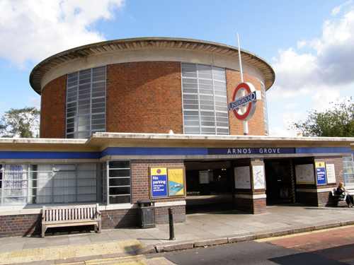
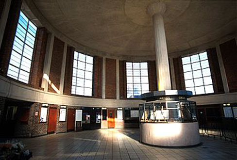
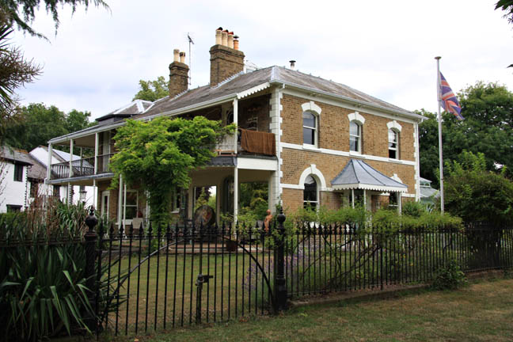
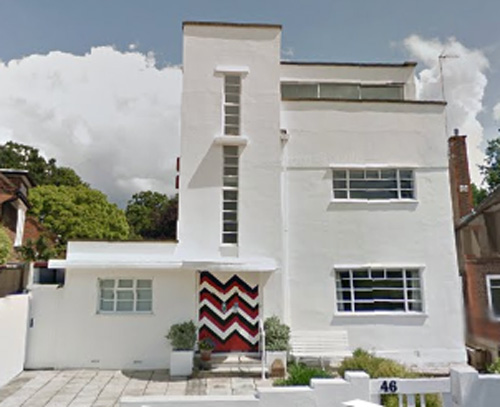
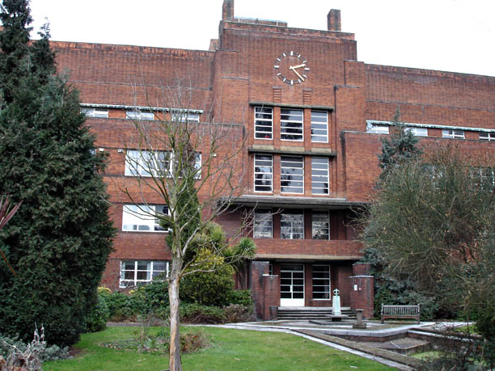

Arnos Grove is used as 'Marble Hill Station'. Designed in 1932 by Charles Holden, who also created many of the iconic Piccadilly Line stations. Holden also designed Senate House which used in 'The Veiled Lady' and 'The Double Clue'.

Interior of Arnos Grove Station.

Shepperton - the house used as 'John Harrison's home'.

Art Deco house in Ailsa Road, Twickenham. Used as 'Claude Anton's home and studio'. (Also used in 'The Veiled Lady').

Japp spends most of the episode in the Royal Masonic Hospital in Ravenscourt Park, London W6 recovering from an operation. (Also used in 'The Adventure of the Clapham Cook' and 'Five Little Pigs').